knitr::opts_chunk$set(
warning = FALSE,
message = FALSE,
echo = FALSE
)
#ce code permet de n'afficher aucun message parasite ni les warnings. clean_taleve
#Charger les données et les library
1. analyses exploratoires de la Talève
#A- Graphique de présence des Talèves par semaine depuis 1990
Le graphique suivant représente pour chaque année (en ligne), au court de quelle semaine (en colonne) la talève a été observé et s’il s’agit d’observations opportunistes ou protocolées. Le graphique indique aussi les sorties protocolées où la talève n’a pas été observé. La ligne pointillée bleue correspond à 2014, début du protocole de point d’écoute de la talève. Celui-ci se déroule du 10 avril au 16 mai, période favorable pour la détection de mâles chanteurs.
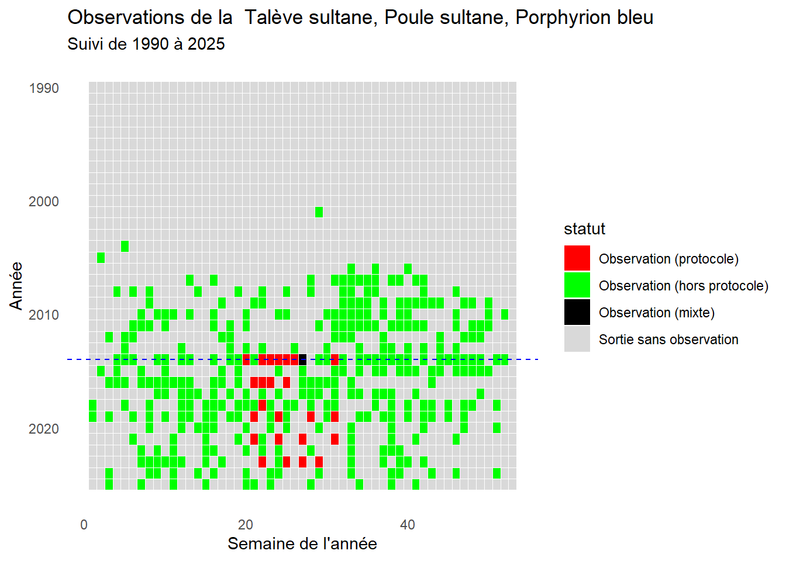
on voit que le protocole est réalisé pendant la periode historique d’écoute et d’observation du la talève. Nous pouvons voir que la talève est présente tout au long de l’année.
#B- Cartographie de la présence des Butors sur les sites d’écoute du protocole
Cette carte donne la localisation des points d’écoute du protocole talève et le nombre de talèves contactés (en cliquant sur les points).
#C- Effort journalier des données protocoles Talève
Ce graphique représente l’effort d’échantillonnage ainsi que le nombre d’obervations cumulés au cours du protocole talève pour chaque heure de la journée de 2014 à 2025. L’effort d’échantillonnage est représenté par la somme des sorties effectuées.
# A tibble: 7 × 2
heure_debut_tronc `sum(nombre_min)`
<int> <dbl>
1 5 6
2 6 42
3 7 21
4 8 2
5 19 3
6 20 37
7 21 23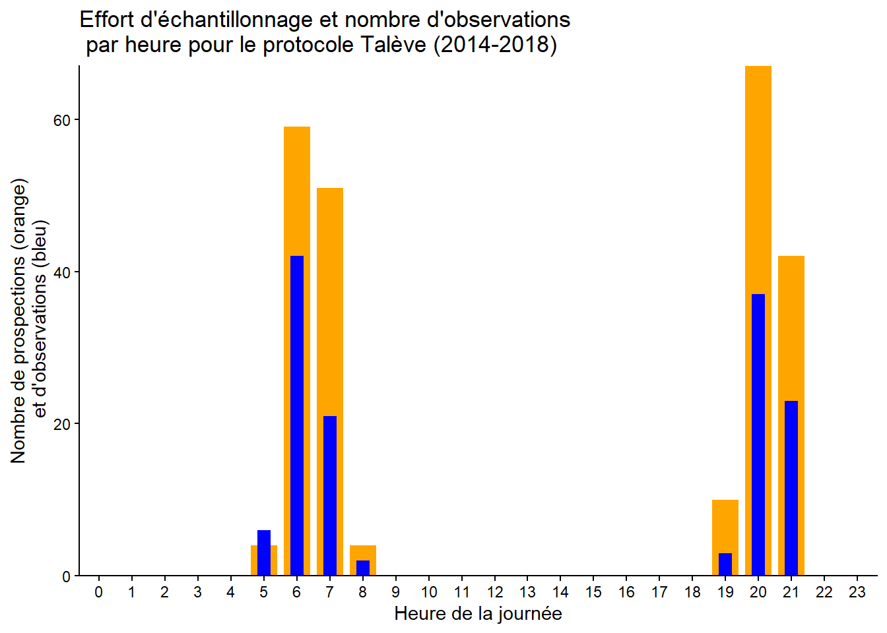
En orange l’effort d’échantillonngage et en bleu le nombre de talèves observés/entendus.
#D- Effort journalier des données opportunistes Talève
Ce graphique représente le nombre cumulé d’observations opportunistes ainsi que le nombre cumulé de talèves observés de cette manière pour chaque heure de la journée entre 1997 et 2023. Les observations pour lesquelles l’heure n’était pas disponible ont été enlevées, expliquant l’intervalle temporel réduit.
# A tibble: 11 × 2
heure_debut_tronc `sum(nombre_min)`
<int> <dbl>
1 4 1
2 5 28
3 6 61
4 7 46
5 8 174
6 9 29
7 10 3
8 11 4
9 19 3
10 20 58
11 21 30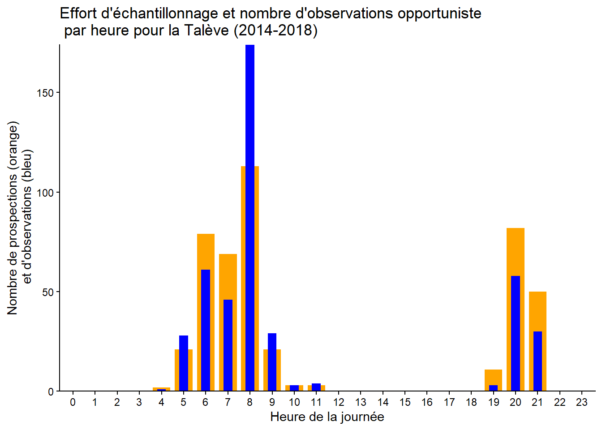
LA couleur orange représente les observations protocolées et le bleu représente les observations opportunistes. Nous retrouvons le meme patron entre les deux types d’observations
2 Preparation du jeu de données et des variables
Pour les analyses de présence et d’abondance, nous utilisons uniquement les données d’observation de la talève provenant des observations protocolées. Ce jeu de données sera nommé Protocole_SuiviTaleve.**
Le tableau résulte de la fusion d’un tableau contenant les variables environnementales (environnement_daily) et d’un tableau regroupant les observations de talèves.
Nous allons préparer les variables environnementales, c’est‑à‑dire les standardiser afin qu’elles ne soient pas influencées par leur unité et pour éviter une sur‑ ou sous‑dispersion.
3 . Modèle de présence/absence
Cette analyse vise à caractériser la dynamique de la population de la Talève et à déterminer l’influence relative des variables temporelles (année, date julienne) et environnementales (précipitations et temperatures) sur l’occurence observée.
| Modèle | df | AIC | delta_AIC |
|---|---|---|---|
| modele_null | 12 | 244.54 | 0.00 |
| modele_complet | 18 | 246.43 | 1.89 |
La sélection de modèles selon le critère d’information d’Akaike (AIC) indique que l’intégration des variables environnementales et hydrologiques n’améliore pas l’ajustement du modèle. Ces résultats suggèrent que ces facteurs ne jouent pas un rôle important dans la variation de l’abondance de la population de talèves. L’analyse est poursuivie à l’aide du modèle complet.
Les parametres estimés indiquent que :
- Année a un effet positif significatif sur l’abondance des talèves (β = 0.242, p = 0.0109713). Donc nous avons une augmentation de l’abondance de talèves au cours des années. Le modele nous donne une augmentaion par année d’environ 1.2737942de talèves dans la reserve independamment des facteurs etudiés dans le modèle
Le graphique présente l’évolution de la population de la talèves au cours du temps
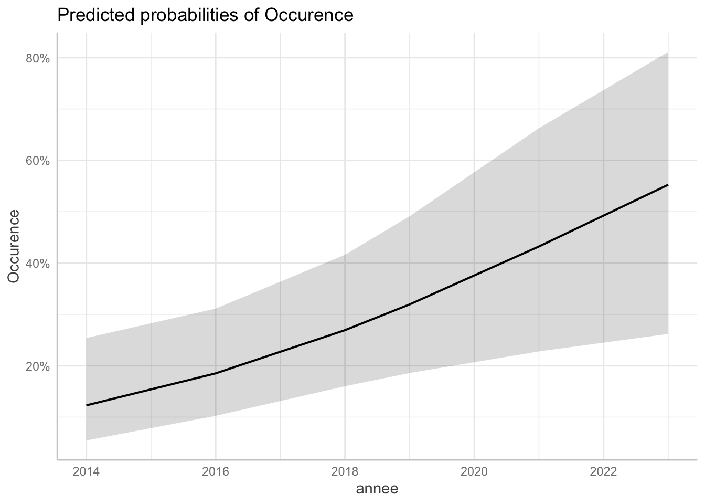
Le site a un effet significatif sur l’abondance des talèves. Les sites 3, 4, 5 et 7 sont significativement différents du site de référence, le site 1. Sur le graphique (fig. X), nous pouvons constater que ces sites n’ont pas d’observations. On peut supposer que ces sites ne présentent pas les conditions favorables pour accueillir la talève.
Le graphique montre le nombre d’observations de talèves sur chaque site du protocole :
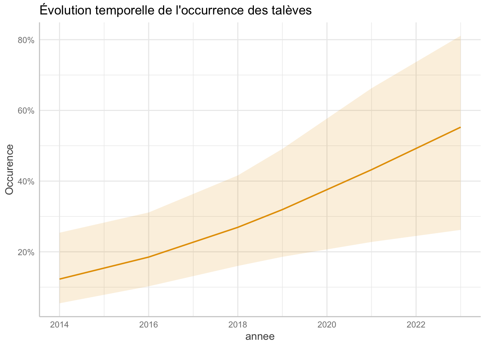
Les graphiques suivants illustrent les effets des variables pour lesquelles aucun effet significatif n’a été détecté, dans le but d’évaluer l’existence de tendances potentielles.
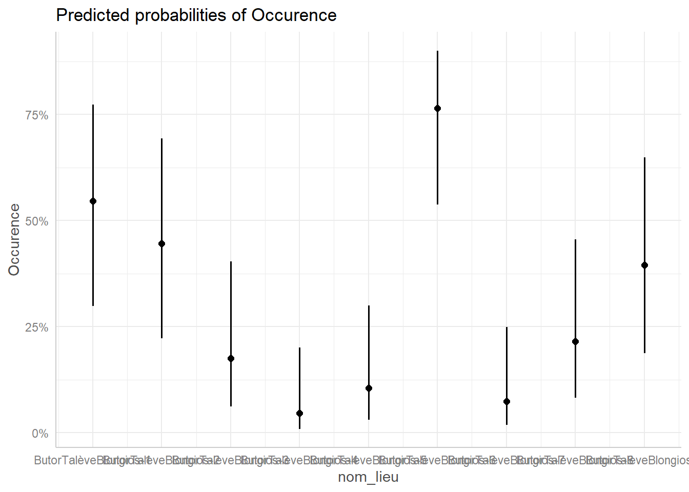
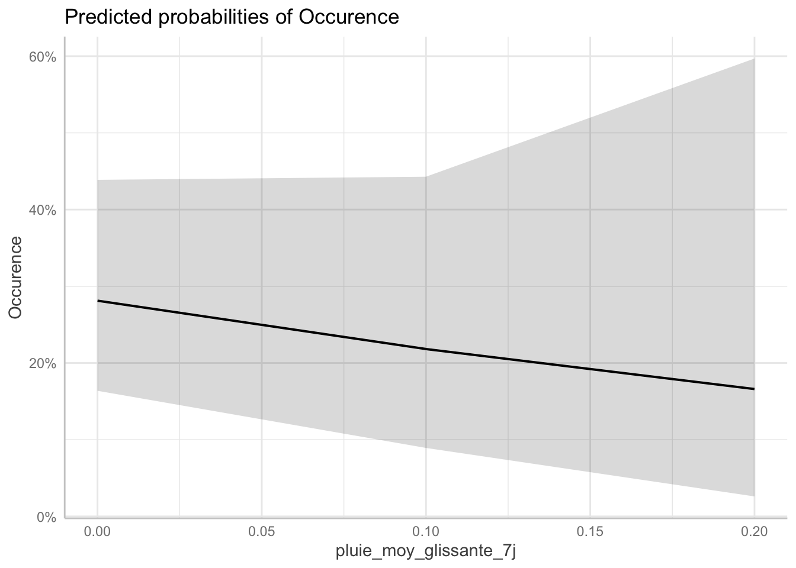

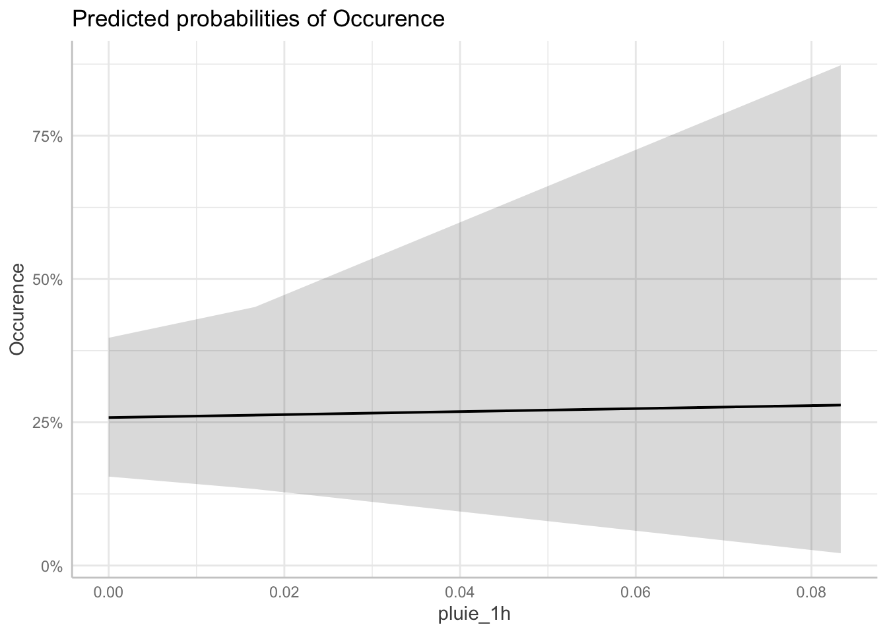

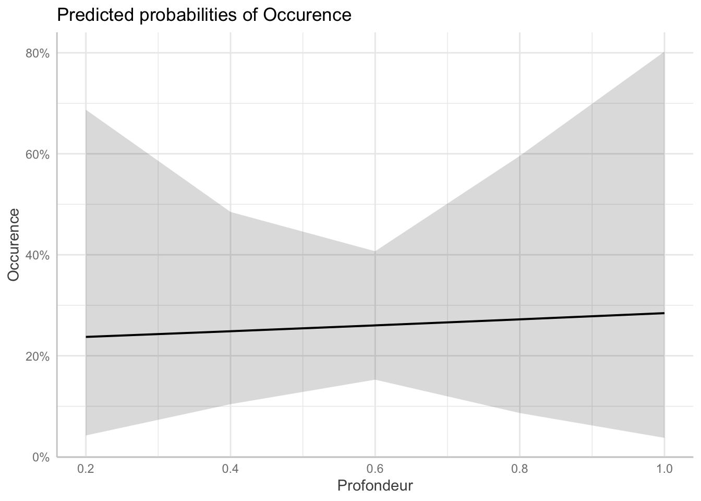
À travers ces derniers graphiques, nous observons une tendance positive de la température : lorsque celle-ci augmente, l’occurrence des talèves tend également à augmenter. À l’inverse, les variables de pluviométrie moyenne sur 31 et 7 jours montrent une tendance négative, une augmentation des précipitations étant associée à une diminution de l’occurrence des talèves. En revanche, pour la pluviométrie journalière, la profondeur et l’assec, aucun effet clair ni tendance marquée sur l’occurrence des talèves ne se dégage.
Globalement, Le modèle indique que l’abondance des talèves est significativement influencée par le site et l’assec partiel et le temps.Le modèle explique environ 29% de la variation de l’abondance des talèves (pseudo-R² = 0.2899152), ce qui suggère que d’autres facteurs non inclus dans le protocole pourraient également jouer un rôle important dans la distribution et l’abondance de cette espèce.
4 . Modèle d’abondance
Cette analyse vise à caractériser la dynamique de la population de la Talève et à déterminer l’influence relative des variables temporelles (année, date julienne) et environnementales (précipitations et temperatures) sur l’abondance observée.
Nous réalisons cette analyse sur seulement les observations qui proviennent du protocole (donc pas les observations opportunistes)
| Modèle | df | AIC | delta_AIC |
|---|---|---|---|
| modele_complet | 18 | 403.07 | 0.00 |
| modele_null | 12 | 413.25 | 10.18 |
La sélection de modèles selon le critère d’information d’Akaike (AIC) indique que l’intégration des variables environnementales et hydrologiques améliore significativement l’ajustement du modèle. Ces résultats suggèrent que ces facteurs jouent un rôle important dans la variation de l’abondance de la population de talèves. L’analyse est poursuivie à l’aide du modèle complet afin d’explorer les effets prédictifs des paramètres sur cette population.
Les parametres estimés indiquent que :
- Année a un effet positif significatif sur l’abondance des talèves. L’effet de l’assec sur l’abondance est négatif (β = 0.199, p = 6.41^{-5}). Donc nous avons une augmentation de l’abondance de talèves au cours des années. Le modele nous donne une augmentaion par année d’environ 1.220182de talèves dans la reserve independamment des facteurs etudiés dans le modèle
Le graphique présente l’évolution de la population de la talèves au cours du temps
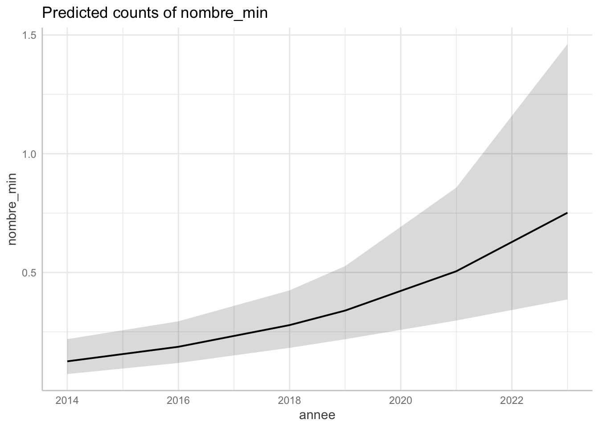
L’effet de l’assec sur l’abondance est négatif (β = -0.668, p = 0.0233527). Donc les evenements d’assec ont un impact négatif qui fait diminuer la popualtion de taleves d’environ 0.512733 par rapport à l’année précedente.
Nous ne pouvons pas mettre en évidence un effet de l’assec partiel sur la population de talèves, celui-ci n’ayant eu lieu qu’en 2022. De plus, le protocole de suivi n’a pas été appliqué selon la périodicité habituelle de deux ans, ce qui limite la capacité à détecter un effet éventuel.
Le graphique présente l’évolution de la population de la talèves en fonction au cours des années
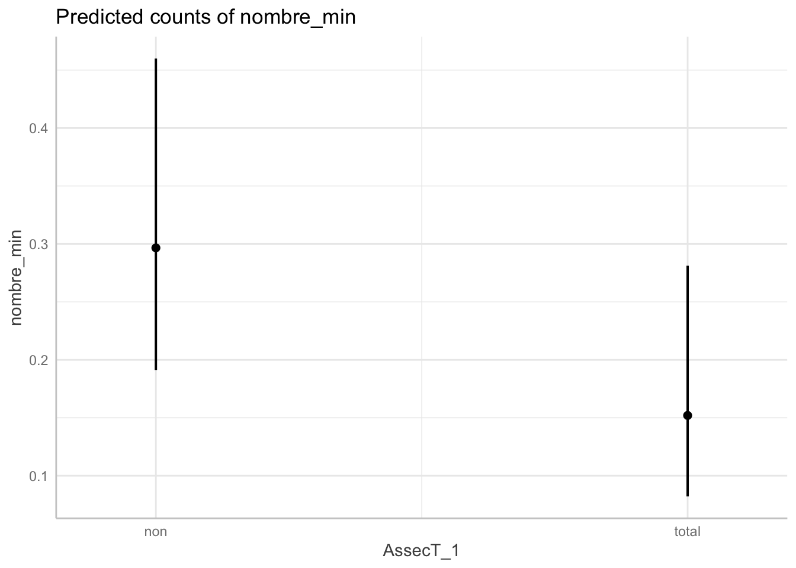
Le site a un effet significatif sur l’abondance des talèves. Les sites 3, 4, 5 et 7 sont significativement différents du site de référence, le site 1. Sur le graphique (fig. X), nous pouvons constater que ces sites n’ont pas d’observations. On peut supposer que ces sites ne présentent pas les conditions favorables pour accueillir la talève.
Le graphique montre le nombre d’observations de talèves sur chaque site du protocole :
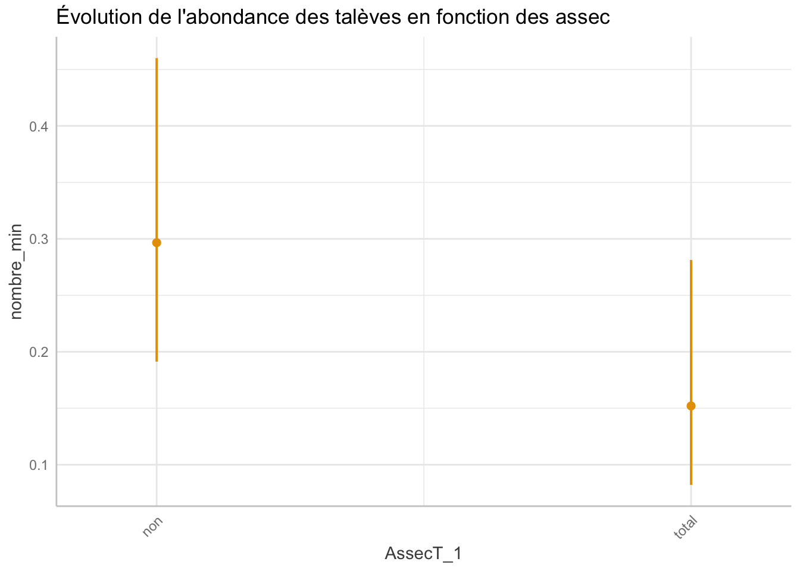
Globalement, Le modèle indique que l’abondance des talèves est significativement influencée par le site et l’assec partiel et le temps.Le modèle explique environ 43 % de la variation de l’abondance des talèves (pseudo-R² = 0.4332637), ce qui suggère que d’autres facteurs non inclus dans le protocole pourraient également jouer un rôle important dans la distribution et l’abondance de cette espèce.
graphe probabilité de présence de la talève sur la réserve
Ce graphique permet de déterminer la probabilité d’occurence de la talève sur la réserve. La probabilité est calculée en faisant le ration des sorties avec observations sur les sorties sans observations. Seules les observations protocolées sont prises en compte
Call:
glm(formula = presence ~ j_julien + j_julien2 + annee, family = binomial,
data = process_data)
Coefficients:
Estimate Std. Error z value Pr(>|z|)
(Intercept) -1.227e+01 9.480e+00 -1.295 0.195425
j_julien 1.374e-01 1.096e-01 1.254 0.209902
j_julien2 -4.283e-04 3.129e-04 -1.369 0.171035
annee2016 5.739e-01 4.492e-01 1.278 0.201370
annee2019 1.340e+00 4.583e-01 2.923 0.003469 **
annee2021 1.432e+00 4.553e-01 3.146 0.001657 **
annee2023 1.733e+00 4.530e-01 3.824 0.000131 ***
---
Signif. codes: 0 '***' 0.001 '**' 0.01 '*' 0.05 '.' 0.1 ' ' 1
(Dispersion parameter for binomial family taken to be 1)
Null deviance: 295.93 on 229 degrees of freedom
Residual deviance: 271.04 on 223 degrees of freedom
AIC: 285.04
Number of Fisher Scoring iterations: 4
La probabilité d’occurence de la talève est plus élevée dans les dernières années de protocole (2019, 2021, 2023) que pendant la première, en 2014. L’espèce semble bien coloniser la réserve du bagnat depuis au moins 2014.
quelles variables font le meilleur glm (préparation au n mixture)
df AIC
m0 1 306.4047
m_date 3 307.2870
m_site 9 271.8103
m_annee 6 295.9490
m_date_site 11 272.7278
m_date_annee 8 294.8044
m_site_annee 14 253.7368
m_full 16 251.2487
Call:
glm(formula = presence ~ j_julien + j_julien2 + nom_lieu + annee,
family = binomial, data = process_data)
Coefficients:
Estimate Std. Error z value Pr(>|z|)
(Intercept) -1.126e+01 1.094e+01 -1.029 0.303427
j_julien 1.389e-01 1.262e-01 1.100 0.271115
j_julien2 -4.471e-04 3.601e-04 -1.241 0.214430
nom_lieuButorTalèveBlongios-2 -4.460e-01 6.281e-01 -0.710 0.477667
nom_lieuButorTalèveBlongios-3 -1.721e+00 6.829e-01 -2.521 0.011713 *
nom_lieuButorTalèveBlongios-4 -3.144e+00 8.956e-01 -3.511 0.000447 ***
nom_lieuButorTalèveBlongios-5 -2.294e+00 7.417e-01 -3.093 0.001979 **
nom_lieuButorTalèveBlongios-6 1.046e+00 6.361e-01 1.645 0.100070
nom_lieuButorTalèveBlongios-7 -2.662e+00 7.964e-01 -3.342 0.000831 ***
nom_lieuButorTalèveBlongios-8 -1.479e+00 6.655e-01 -2.222 0.026272 *
nom_lieuButorTalèveBlongios-9 -6.397e-01 6.311e-01 -1.014 0.310755
annee2016 4.400e-01 5.351e-01 0.822 0.410961
annee2018 1.471e+00 8.702e-01 1.690 0.091010 .
annee2019 1.827e+00 5.447e-01 3.353 0.000799 ***
annee2021 1.967e+00 5.437e-01 3.617 0.000297 ***
annee2023 2.413e+00 5.509e-01 4.381 1.18e-05 ***
---
Signif. codes: 0 '***' 0.001 '**' 0.01 '*' 0.05 '.' 0.1 ' ' 1
(Dispersion parameter for binomial family taken to be 1)
Null deviance: 304.40 on 236 degrees of freedom
Residual deviance: 219.25 on 221 degrees of freedom
AIC: 251.25
Number of Fisher Scoring iterations: 5